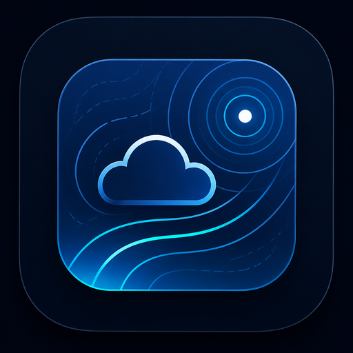

MID Wetter wird gestartet …Kurzfristprognose, 7- und 14-Tage-Ensemble, Radar und Wetterwarnungen.Favoriten und Einstellungen bleiben lokal erhalten.Du kannst neu laden oder nur den App-Cache reparieren. Persönliche Daten werden dabei nicht gelöscht.